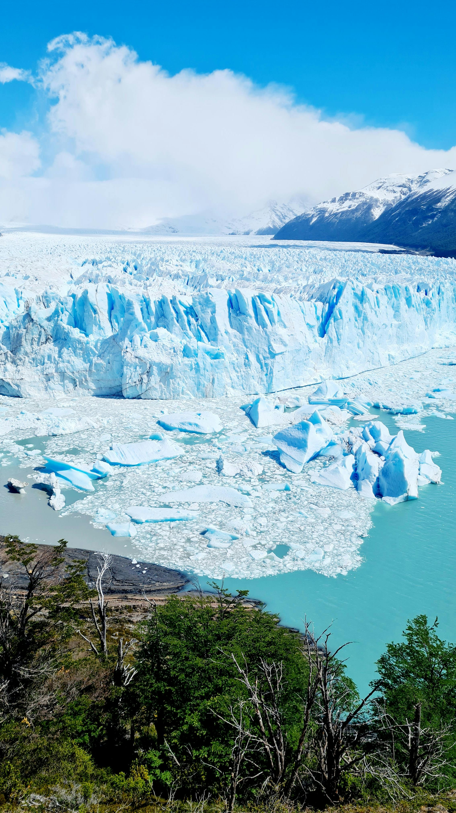
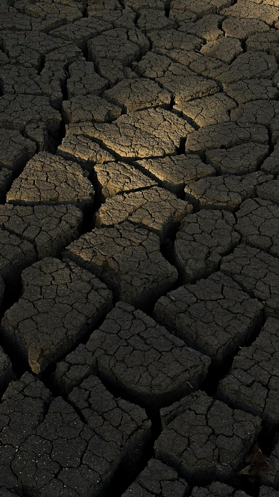

El cambio climático está generando consecuencias cada vez más graves en todo el mundo. El aumento de las temperaturas provoca olas de calor más intensas, incendios forestales y cambios en los océanos. Además, las tormentas, huracanes e inundaciones son cada vez más fuertes y destructivos debido al exceso de humedad y al calentamiento del agua del mar. También se presentan sequías más frecuentes, afectando el acceso al agua y dañando cultivos y ecosistemas enteros.
Otra de las consecuencias más preocupantes es el aumento del nivel del mar causado por el deshielo de los polos y glaciares, poniendo en peligro a comunidades costeras e islas. Al mismo tiempo, muchas especies animales y vegetales están desapareciendo debido a los cambios extremos en sus hábitats naturales. Esto también afecta la producción de alimentos, generando escasez y aumentando el riesgo de desnutrición en distintas regiones del planeta.
La salud humana también se ve afectada por la contaminación, las enfermedades y los fenómenos climáticos extremos. Finalmente, todos estos problemas provocan más pobreza y desplazamientos forzados, ya que muchas personas pierden sus hogares, recursos y medios de vida debido a los efectos del cambio climático.
Respecto a los niveles preindustriales, la temperatura media del planeta aumentó 0,98° centígrados y la tendencia observada desde el año 2.000 hasta hoy prevé que, si no se pone remedio, podría llegar a un +1,5° más antes del 2030. El impacto del calentamiento global ya es evidente: el hielo marino ártico disminuyó de media un 12,85% por década, mientras que los registros de las mareas costeras muestran un aumento del nivel del mar de 3,3 milímetros por año desde 1870. La década 2009-2019 fue la más calurosa nunca registrada y 2020 el segundo año más caluroso de la historia, ligeramente por debajo del límite máximo establecido en 2016. Las temporadas de incendios se han vuelto más largas e intensas, como sucedió en Australia en 2019 y de 1990 a hoy cada año han aumentado los eventos meteorológicos extremos, como ciclones e inundaciones, que también ocurren en épocas del año atípicas con respecto al pasado y que son cada vez más arrolladores. Fenómenos como El Niño se han vuelto más irregulares y han determinado temibles sequías en zonas ya amenazadas por la aridez crónica, como el este de África, mientras que la Corriente del Golfo se está ralentizando y podría cambiar de rumbo. Las especies vegetales y animales se desplazan de forma imprevisible de un ecosistema al otro, acarreando daños incalculables a la biodiversidad de todo el mundo.
Definir todo ello con el término cambio climático es correcto, pero no lo explica de forma suficientemente clara. Tenemos que empezar a hablar de crisis climática porque el clima siempre ha cambiado, pero no tan rápido ni con infraestructuras rígidas y complejas como las ciudades y el sistema productivo a los que los países más industrializados están acostumbrados.
